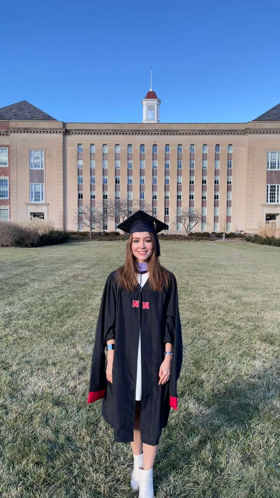
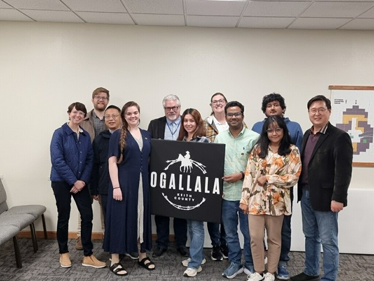
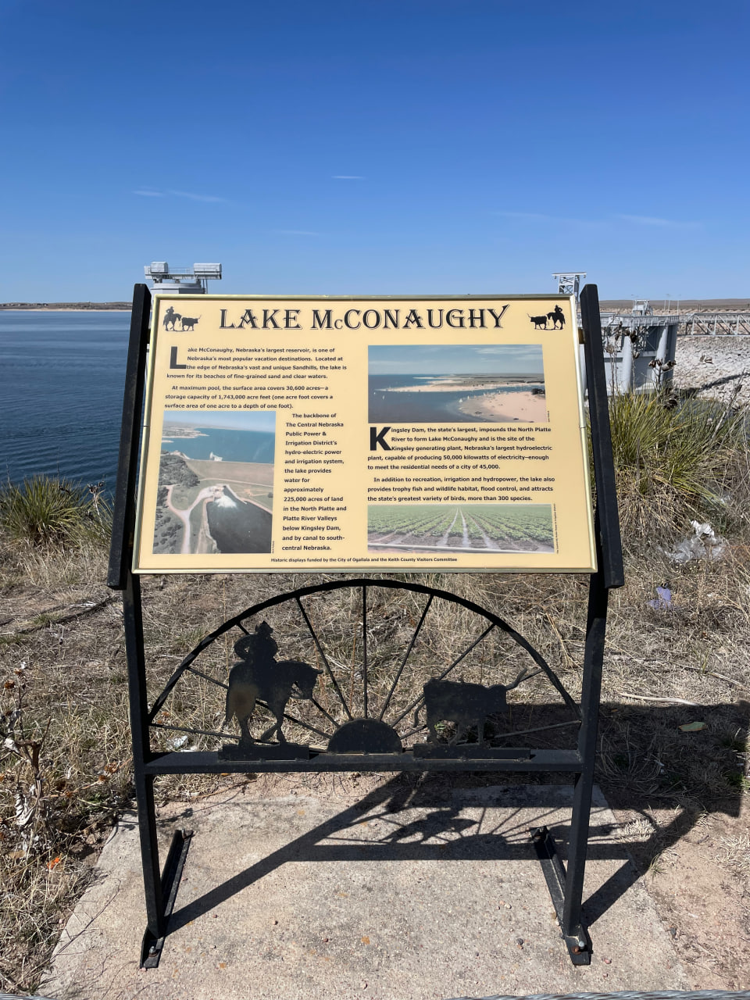

Aysan
Esmaely
I study how communities move, access care, and navigate systems that shape daily life. My research focuses on transportation equity for vulnerable populations — combining qualitative methods, GIS, and policy analysis to understand barriers and develop actionable planning recommendations.
Latest News
Publications
Conference Presentations
Conference Presentations

Transportation Research Board Annual Conference
January 2025
Presented research on addressing transportation barriers to low vision care among individuals with visual impairments in Nebraska. Attended as a recipient of the Graduate Student Travel Award and the Nebraska Transportation Center Award.


American Planning Association National Conference
2025
Attended the APA National Planning Conference in Denver as a recipient of the APA Student Travel Award for Outstanding Achievement from the Nebraska APA Chapter.

Association of Collegiate Schools of Planning Annual Conference
November 2024
Presented research on transportation barriers to low vision care. Attended as a recipient of the ACSP Graduate Student Travel Award.
Nebraska Chapter — American Planning Association Conference
March 2025
Presented research on transportation barriers to low vision care among individuals with visual impairments in Nebraska. Received the Student Scholarship Award for Outstanding Achievement from the Nebraska APA Chapter.


M.Sc. Graduation — Community & Regional Planning
December 2025
Graduated with a Master of Science in Community and Regional Planning from the University of Nebraska–Lincoln. Thesis: Transportation Practitioners' Reflections on Addressing Transportation Barriers for Vulnerable Populations in Nebraska. Advisor: Dr. Abigail Cochran.
Research Projects
Transportation Barriers to Low Vision Care
- Analyzed qualitative interview data from individuals with low vision; contributed to manuscript preparation.
- Conducted in-depth interviews with healthcare providers; performed thematic analysis for a separate manuscript.
Telehealth & Transportation Barriers in Rural Nebraska
- Independently designed study and conducted interviews with rural residents and healthcare providers.
- Analyzed qualitative data on broadband-enabled telehealth and transportation accessibility.
Southeast Nebraska Infrastructure Inventory
- Co-designed a survey targeting city clerks and water operators across 15 counties.
- Participated in Evaluation & Selection Committee for Regional Planning Consultant RFP.
City of Ogallala Comprehensive Plan Update


- Led transportation section: background research, data collection, GIS mapping, analysis, and recommendations.
- Coordinated community surveys, stakeholder interviews, and public open house at City Hall.
Professional Experience
- Authored and submitted the ECCBG grant for the City of Fairbury (~$100,000).
- Produced GIS maps and spatial analyses for NEPA environmental review using ArcGIS.
- Assisted communities with capital improvement planning, comp plan updates, and stakeholder engagement.
- Conducted qualitative research on transportation barriers across multiple U.S. DOT and state-funded projects.
- Led interviews with healthcare providers, transportation specialists, and rural residents across Nebraska.
- Applied thematic analysis in Dedoose; contributed to multiple manuscript preparations.
- Researched telehealth's role in overcoming transportation barriers in rural Nebraska.
- Contributed to the Capital Improvement Plan for the City of Waverly and a Comp Plan update for Pawnee City.
- Led GIS-based mapping to update city boundary lines, incorporating informal settlement areas.
- Built and maintained a comprehensive GIS database of informal settlement conditions.
- Conducted community engagement and developed multi-stakeholder action plans.
Awards & Honors
| 2025 | Student Scholarship Award for Outstanding Achievement Nebraska APA Chapter |
| 2025 | Student Travel Award American Planning Association — NPC, Denver |
| 2025 | Graduate Student Travel Award TRB Annual Conference — Washington D.C. |
| 2024 | Nebraska Transportation Center Award TRB Annual Conference |
| 2024 | Graduate Student Travel Award ACSP Annual Conference — Seattle, WA |
Contact
University of Nebraska-Lincoln
Southeast Nebraska Development District